U ovoj vježbi smo trebali napraviti vlastiti font u programu FontForge i isprobati ga u Wordu i Illustratoru.
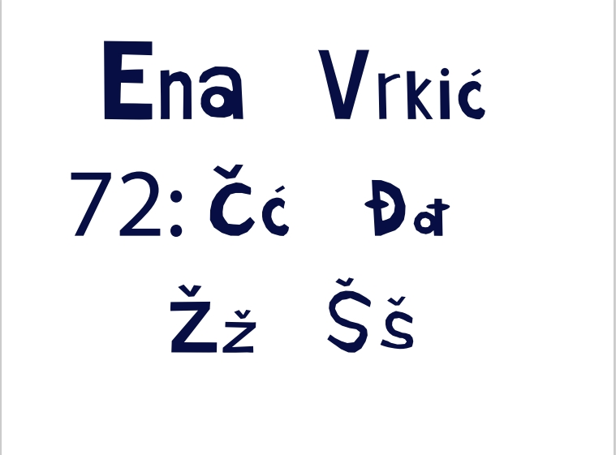U ovo vježbi smo trebali u Illustratoru nacrtati Breizove krivulje u koordinatnom sustavu i uklopiti ih u slova vlastitog fonta s prošle vježbe. Prva slika je vježba rađena po videu,a druga vlastiti primjer.

U ovoj vježbi smo se bavili crtanje slobodnih vektorskih okvira prema predlošcima slika koje smo uveli u vektorski program, u ovom slučaju Illustrator i koristili smo boje koje smo kreirali grupi Swatch. Prva slika je vježba rađena po videu,a druga vlastiti primjer.
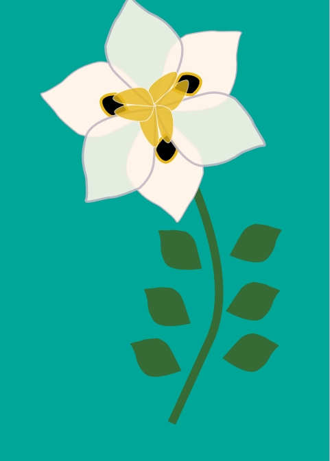 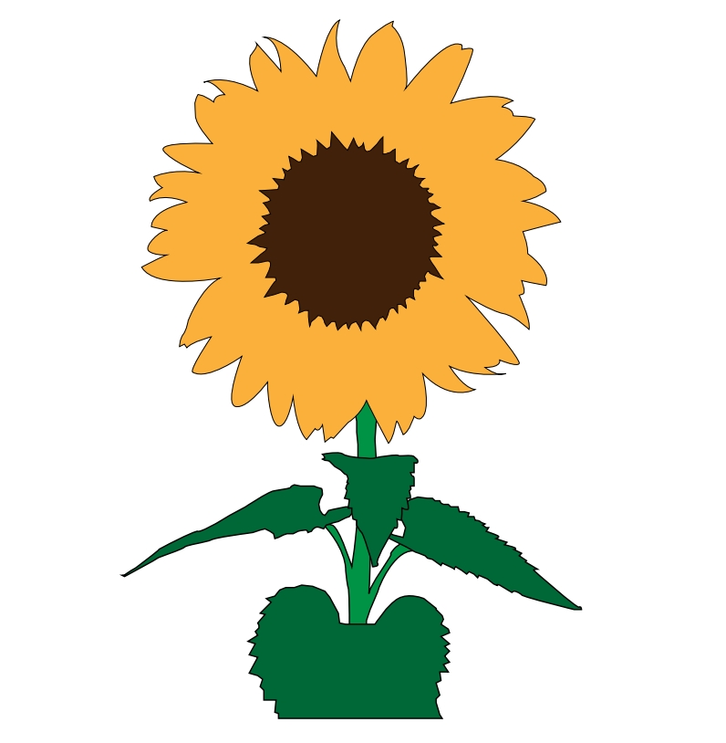U ovoj vježbi smo korisitili tehnike spajanja i izrezivanja objekata i primijenitili različite vrste gradijenata i transparencije. Prva slika je vježba rađena po videu,a druga vlastiti primjer.
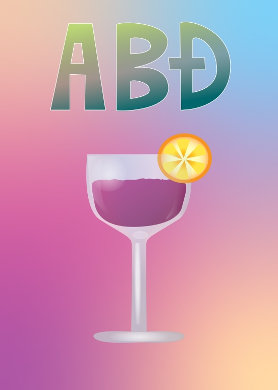 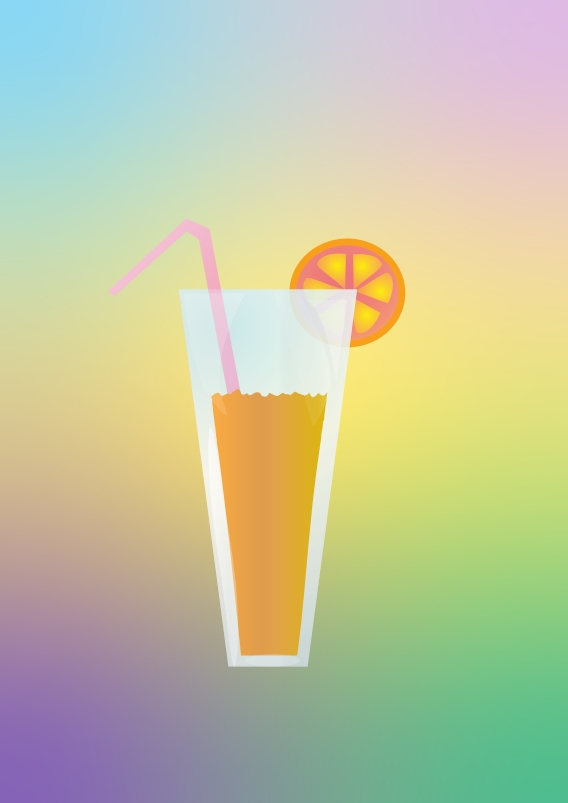Ovo je prvi projektni zadatak u kojem smo kominirali sve tehnike iz prošlih vježbi i koristili vlastit font iz prve.
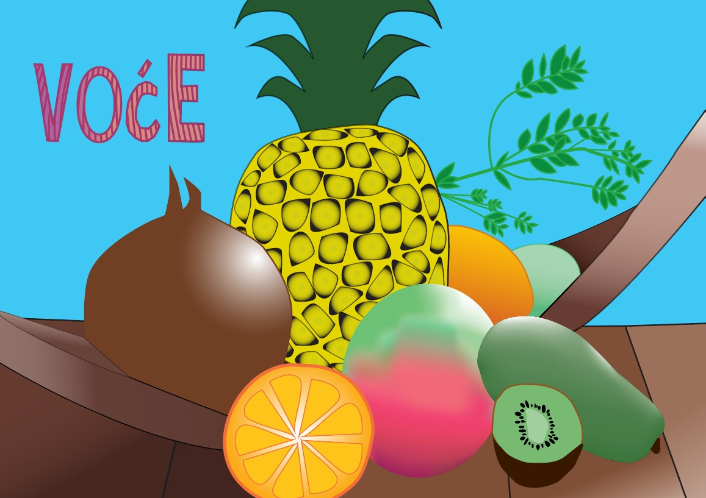U ovoj vježbi bavili smo se retuširanjem fotografija u Adobe Photoshopu.
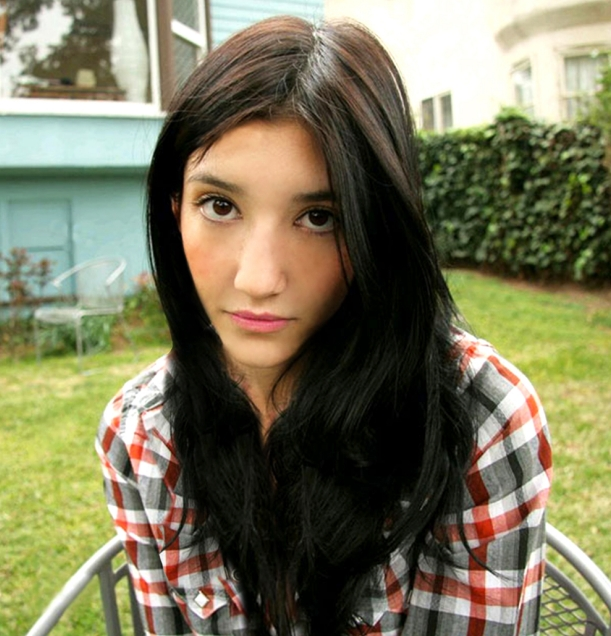 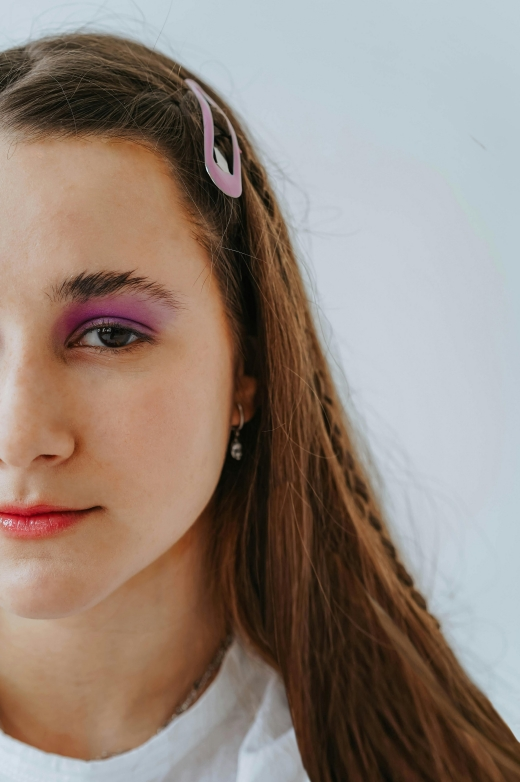U ovoj vježbi smo se bavili tehnikom koloriranja crno-bijelih slika, te selekcijama i maskama.
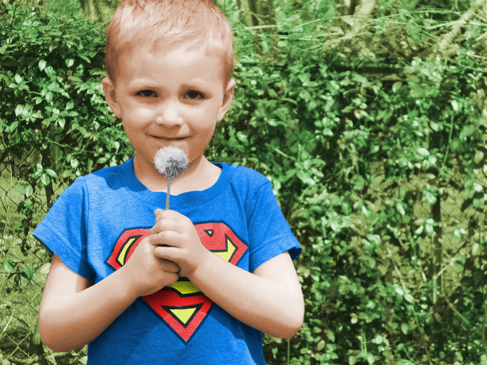 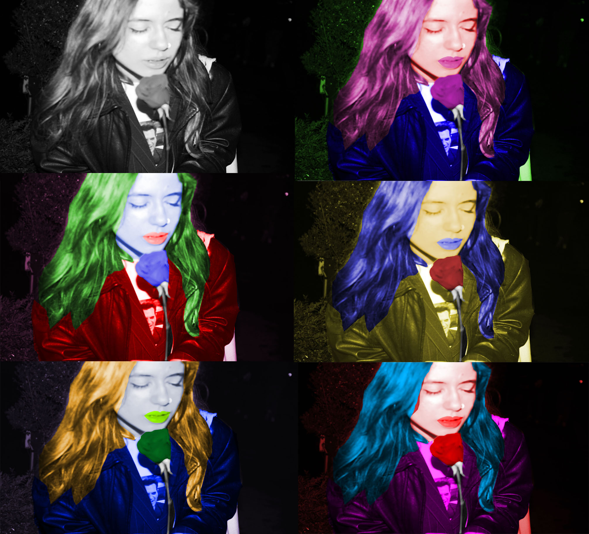U ovoj vježbi smo se bavili fotomontažom odnosno kombiniranjem više fotografija izrezivanjem dijelova iz različitih slika i spajanjem u jednu cijelinu.
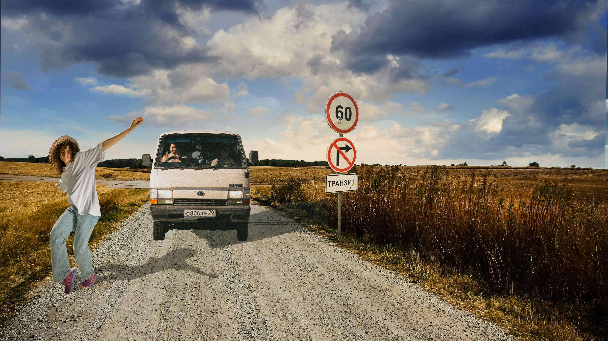U ovom projektnom zadatku smo kombinirali sve tehnike iz prošli vježbi kako bih kreairali završnu sliku.
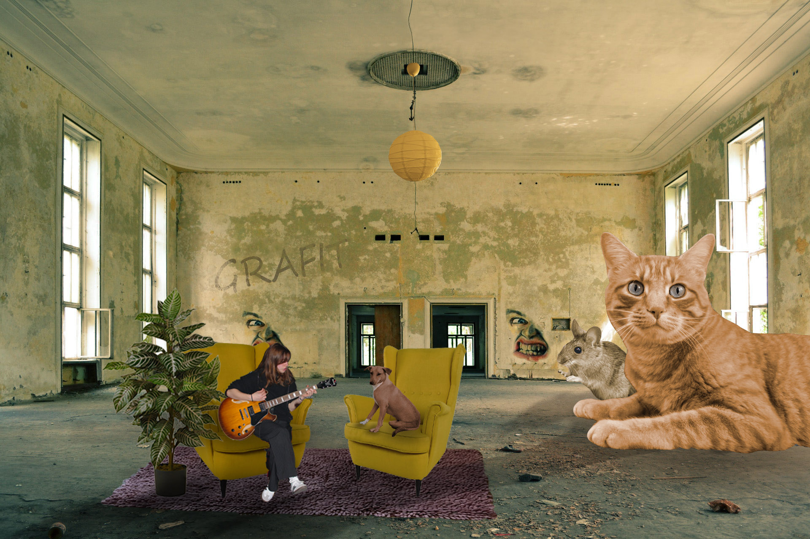U ovoj vježbi smo se bavili osnovama obrade video materijala i uvođenjem multimedije u video projekt. Rezultat vježbe je kinemagraf čija je karakteristika spajanje statične i pokretne slike. Radili smo u programu ShotCut.

U ovoj vježbi smo se bavili video obradom, a u to spada rezanje i spajanje video isječaka u jedan, video efekti, brisanje i dodavanje zvuka i dodavanje i obrada teksta.